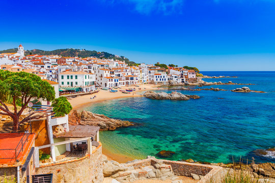

⭐ Popular
Costa Brava
Des de les cales verges de Begur fins als pobles pesquers de Tamariu i Calella de Palafrugell.
20+ Cales
Camí de Ronda
Gastronomia
Eco-friendly
Natació
Fotografia
Millor època: Maig - Setembre
Més Informació